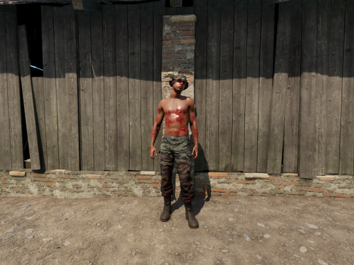
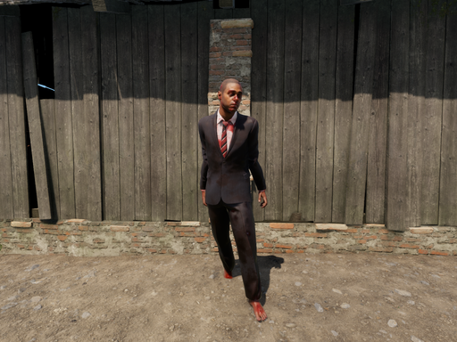
Slow
Shambler
The slow archetype. Numbers over speed: the wall that keeps coming while you reload.
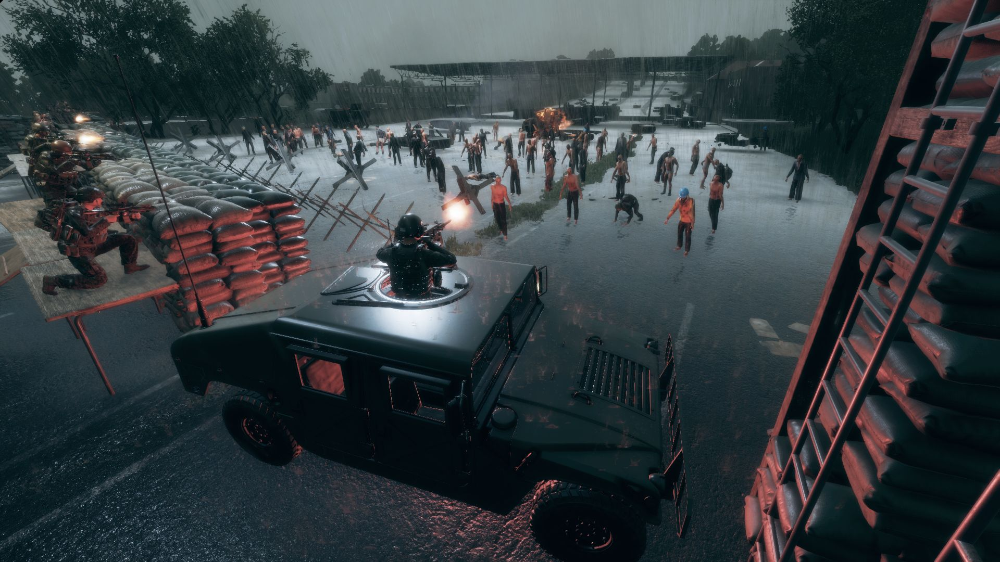
A custom zombie sandbox including slow, fast, and crawling Zombies. Place them through Game Master, or let ambient populations and directed waves shape an entire scenario.
Counted every hour from the public Arma Reforger server list by the Outbreak Server Watch, with data from ReforgerMods.net and ArmaHQ. Players are the people on servers running the add-on, not subscribers.
Three archetypes ship in the core add-on, each with its own animations and behaviour, in civilian and military dress. Health and damage are yours to tune. Hover a card to see the other outfit.


The slow archetype. Numbers over speed: the wall that keeps coming while you reload.
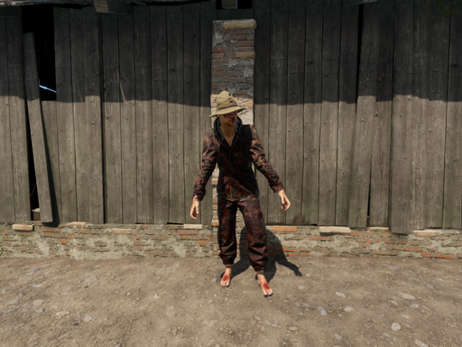
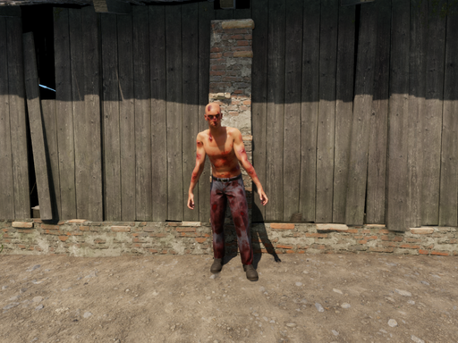
The fast archetype. Closes distance in seconds and tackles what it catches.
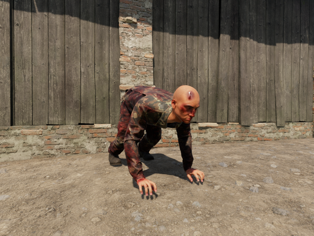
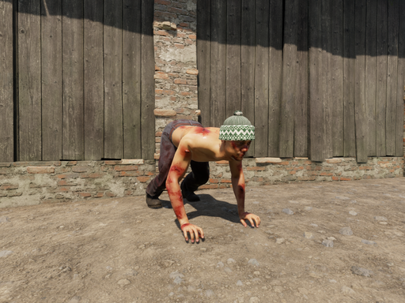
The crawling archetype. Low, quick and hard to spot in cover and crops.
Everything is placeable and configurable from the Game Master interface, on your own scenarios and servers.
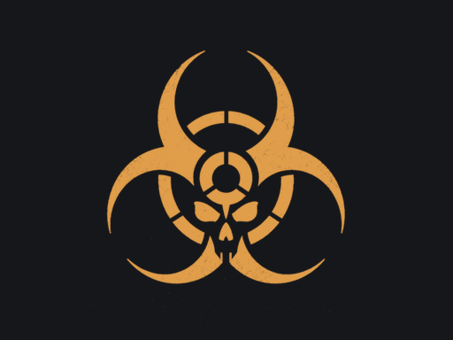
Screenshots from the Workshop listing. Select one to see it full size.
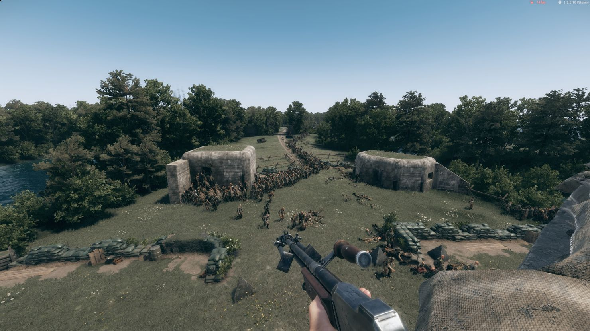
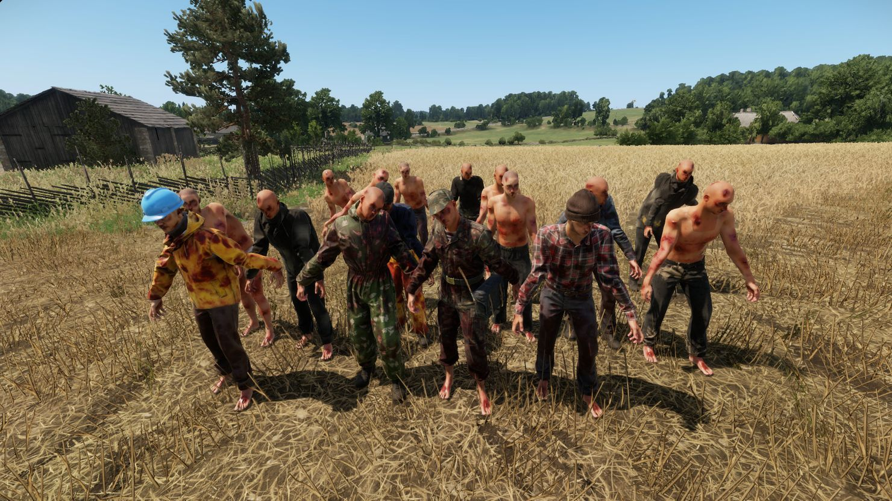
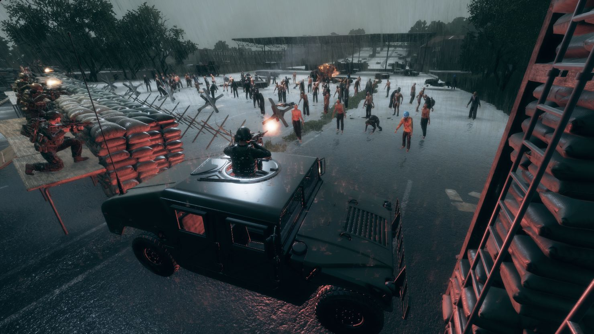
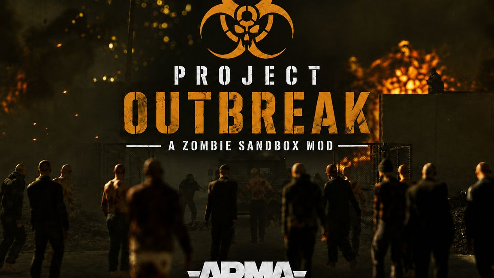
Every public Workshop item from the same author, from the zombie sandbox to stand-alone creatures. Each card shows its live server count from the Outbreak Server Watch.
The zombie sandbox and its optional modules. Start with the core add-on, then add what your scenario needs.
6 items · 52,620 downloadsA custom zombie sandbox including slow, fast, and crawling Zombies.
An optional infection system for Project Outbreak that turns infected into Zombies.
An optional destruction system that lets zombie pursuits continue through buildings and compounds by breaking doors and windows.
An equipment pack that gives players more options when a horde closes in.
Optional Project Outbreak zombie appearances, including many new Zombie skins.
Optional Project Outbreak special zombies and creatures, including the Nephilim and Nightingale.
Ready-to-host multiplayer scenarios that run Project Outbreak for you.
2 items · 117 downloadsA Zombie Apocalypse PvE Project Outbreakscenario on the Glenwood terrain.
A lighter Project Outbreak Deadwood: the same self-running PvE zombie scenario on the Glenwood terrain, with only Project Outbreak and the map as dependencies.
Stand-alone creature add-ons, each built on Creature Melee AI.
4 items · 1,049 downloadsSmall sword-carrying creatures travel in groups. A larger crimson Blademaster wears layered armour and carries a dark, red-marked blade. Requires Creature Melee AI.
Two fully-controllable warbeasts with custom attacks and animations.
Eyekin are pale humanoid organisms with a single enlarged eye occupying most of the head.
A lean, fast creature that closes on prey and fights at close range.
The melee AI framework under every creature here, plus AI support and weapons.
4 items · 27,253 downloadsA flexible foundation for custom melee creatures.
AI Rearm lets AI request magazines from squadmates, recover compatible ammunition from allowed dead bodies, and visit arsenals. A placeable Game Master settings system controls settings.
A standalone military crossbow with a four-bolt quiver, detachable scope and custom loading animation.
Introduces a mannable Ballista Crowssbow that can be used to kill and hunt dragons
Published change notes, straight from the Workshop. Other add-ons are listed by their latest update.
Added the 2.4 m Eyekin Bird, with detailed pink skin, repaired face and beak textures, both ground slaps, running and vertical takeoff, ascent/descent, forward and loaded flight, horizontal glide and an extended-neck, straight-leg dive. It grabs people in its beak or talons and drops them from height. It grips airborne helicopters by the skid or hull and pulls them down. Wing sounds follow the downstroke, including the occasional glide flap.
Added the 21 m Eyekin Titan with twelve eye weak points, eye lasers and stomp attacks. All twelve eyes must be defeated to kill it. Added separate Bird health and Titan eye-health settings in Game Master. Both forms support player control. Requires Creature Melee AI 1.7.0.
Creature creators can reuse shared Sprinter movement, melee, tackle, feeding and reaction animations through CMAI. Added contact hooks for possessed creatures and Goblin parries. Existing creature profiles keep their current behavior unless they opt into the new capabilities. Completed credits for the shared animation banks.
Bigger bolts and a heavier sound.
The classic and modern military mounts both use these changes. Still WIP; multiplayer presentation and full-range crew posture need further testing.
Taking a district stops its local infected reinforcements; roaming infected can still enter. Graves stop preparing new waves when an attack ends. Nearby infected remain, while abandoned groups clear after everyone leaves. The compact campaign map keeps bases and relays, with field orders in the journal. Joining screens show US Army Remnants. Enemy score icons and flags use the black-and-red Outbreak banner. Infection and Ambience opening overlays default to off. Selected barriers have openings while surrounding fence runs remain. Tunnels have been updated, but zombie movement and spawning underground are still under testing and are not yet reliable.
| Version | Published | Game | Size |
|---|---|---|---|
| 2.3.0 | 2026-10-06 | 1.8.0.13 | 199 MB |
| 2.2.0 | 2026-10-03 | 1.8.0.13 | 205 MB |
| 2.1.3 | 2026-10-01 | 1.8.0.13 | 194 MB |
| 2.1.2 | 2026-10-01 | 1.8.0.13 | 194 MB |
| 2.1.1 | 2026-09-29 | 1.8.0.13 | 194 MB |
| 2.1.0 | 2026-09-29 | 1.8.0.13 | 194 MB |
| 2.0.1 | 2026-09-27 | 1.8.0.13 | 194 MB |
| 2.0.0 | 2026-09-27 | 1.8.0.13 | 194 MB |
| 1.3.3 | 2026-09-16 | 1.8.0.13 | 956 MB |
| 1.3.2 | 2026-09-15 | 1.8.0.13 | 955 MB |
Where to get the add-ons, follow the numbers and talk to the people who make and run them.
Who made what, and the licences that apply.